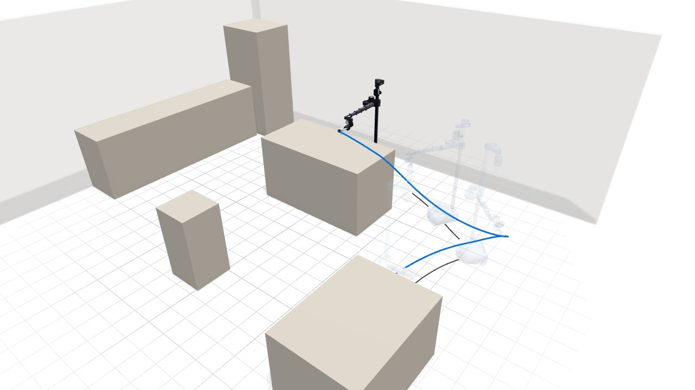
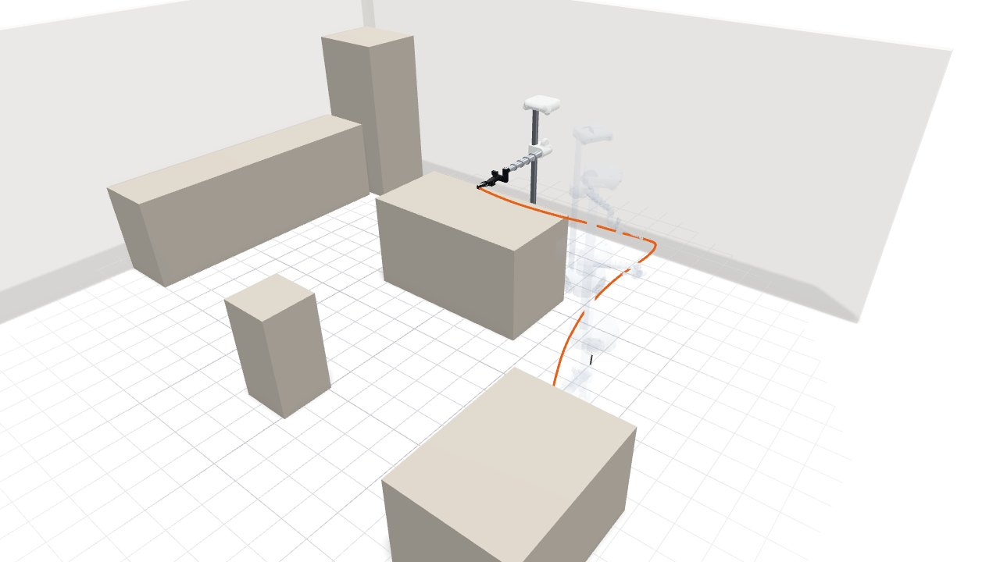
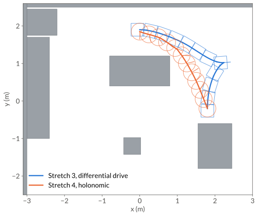
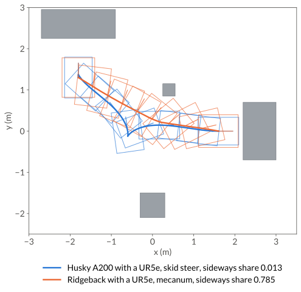
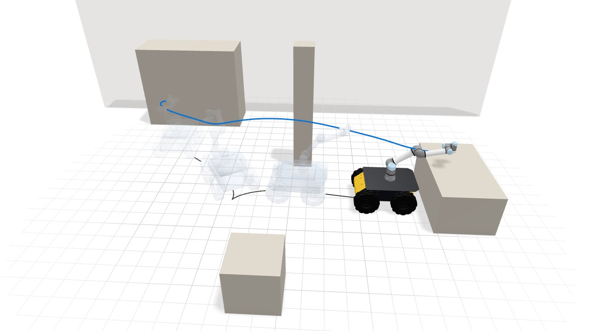
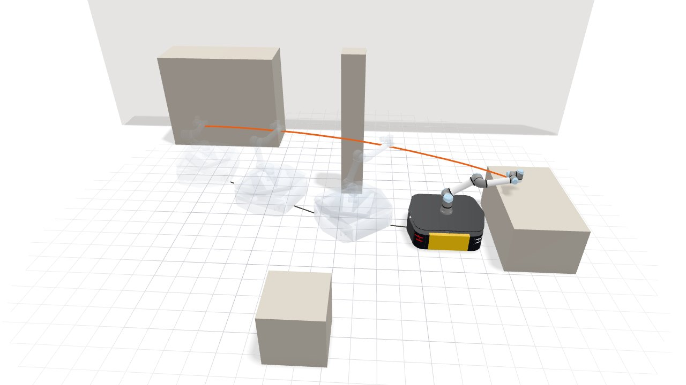

Whole-Body Planning#
In this guide, we plan a Hello Robot Stretch 3 from beside a kitchen table to the far side of the island, moving its base and its arm in one motion. Then we plan the same task for a Stretch 4, whose base can slide sideways. The same steps plan a UR5e on two Clearpath bases.

The finished plan. The grey curve traces the base on the floor and the blue curve the gripper. Drag to orbit, and use the controls to pause the robot or move it along the path.
Hello Robot Stretch 3 and Stretch 4#
The full script is examples/robots/mobile_manipulation/stretch.py, and the C++ version is
examples/robots/mobile_manipulation/stretch.cpp.
1. Load the robot and the kitchen#
geodex.robots.Stretch3 is the robot’s configuration space. A configuration is the base
pose \((x, y, \theta)\) followed by the lift, the arm extension and the three wrist
joints. workspace is the rectangle the planner samples base positions from. The kitchen
is a scene file of boxes, kitchen.yaml, in a scenes
directory next to the script.
from pathlib import Path
import numpy as np
import geodex
# The kitchen, a scene file in the scenes directory next to this script.
SCENE = Path(__file__).resolve().parent / "scenes" / "kitchen.yaml"
scene = geodex.load_scene(str(SCENE))
workspace = ((-3.0, 3.0), (-2.5, 2.5))
stretch3 = geodex.robots.Stretch3(workspace=workspace)
print(stretch3.name(), "drive:", stretch3.drive(), "coordinates:", stretch3.dim())
Full example: examples/robots/mobile_manipulation/stretch.py
#include <cmath>
#include <cstdio>
#include <filesystem>
#include <numbers>
#include <string>
#include <vector>
#include <geodex/robots/planning.hpp>
namespace gr = geodex::robots;
namespace gv = geodex::integration::vamp;
namespace gp = geodex::planning;
// The kitchen, a scene file in the scenes directory next to this program.
const std::string kScene =
(std::filesystem::path(__FILE__).parent_path() / "scenes" / "kitchen.yaml")
.string();
int main(int argc, char** argv) {
constexpr double pi = std::numbers::pi;
const auto scene = gv::load_scene(kScene);
gr::RobotPlanOptions options; // each robot takes the base metric of its drive
options.base_region = {Eigen::Vector2d(-3.0, -2.5), Eigen::Vector2d(3.0, 2.5)};
constexpr auto R3 = gr::Robot::Stretch3;
const bool differential = gr::base_drive<R3> == gr::BaseDrive::Differential;
std::printf("%s drive: %s coordinates: %d\n", gr::name(R3).data(),
differential ? "differential_drive" : "holonomic",
gr::MassMatrix<R3>::Nq + 3);
Full example: examples/robots/mobile_manipulation/stretch.cpp
It prints stretch3 drive: differential_drive coordinates: 8. The Stretch 3 rolls on two
wheels and a caster, and its default base metric is the differential-drive one.
2. Plan the motion#
The start has the wrist tucked beside the table, and the goal holds the gripper over the
island. The Stretch 3’s arm points to the right of its base.
PlanSettings(iterations=1500, seed=1, collision_check_resolution=0.005) gives the planner
1500 iterations and a fixed seed, and checks the path every 5 mm of sphere motion.
# (x, y, theta, lift, arm extension, wrist yaw, wrist pitch, wrist roll)
start = np.array([1.8, -0.2, np.pi / 2, 0.3, 0.0, 3.0, -0.5, 0.0]) # by the table
goal = np.array([0.0, 1.9, 0.0, 0.85, 0.4, 0.0, 0.0, 0.0]) # over the island
settings = geodex.PlanSettings(iterations=1500, seed=1, collision_check_resolution=0.005)
result3 = geodex.plan(stretch3, start, goal, collision=scene, settings=settings)
print(f"solved={result3.solved} cost={result3.cost:.3f} "
f"waypoints={len(result3.path)}")
Full example: examples/robots/mobile_manipulation/stretch.py
// (x, y, theta, lift, arm extension, wrist yaw, wrist pitch, wrist roll)
Eigen::VectorXd start(8), goal(8);
start << 1.8, -0.2, pi / 2, 0.3, 0.0, 3.0, -0.5, 0.0; // by the table
goal << 0.0, 1.9, 0.0, 0.85, 0.4, 0.0, 0.0, 0.0; // over the island
gp::PlanSettings settings;
settings.iterations = 1500;
settings.seed = 1;
settings.collision_check_resolution = 0.005;
const auto result3 = gr::plan<R3>(start, goal, scene, settings, options);
std::printf("solved=%d cost=%.3f waypoints=%zu\n", result3.solved, result3.cost,
result3.path.size());
Full example: examples/robots/mobile_manipulation/stretch.cpp
It prints solved=True cost=5.332 waypoints=641. The cost is the length of the path under
the robot’s metric.
planning time
first solution
iterations
The times are from a laptop CPU (Intel Core i7-10875H). The planner finds the first path after
57 iterations. The 1500 iterations take 55 ms, and smoothing takes 67 ms.
result.first_solution_ms, result.time_ms and result.smooth_ms hold these times.
3. Measure how much the base slides#
Between two waypoints, the base moves along one constant body twist
\((v_x, v_y, \omega)\), the SE(2) logarithm of the two base poses. sideways_share
adds up the sideways part \(|v_y|\) of every edge and divides it by the base’s travel.
def sideways_share(path):
"""Share of the base's travel that is sideways in its own frame.
Each edge moves the base along one constant body twist (v_x, v_y, omega). The
twist is the SE(2) logarithm between the edge's waypoints."""
se2 = geodex.SE2()
sideways = travel = 0.0
for a, b in zip(path[:-1], path[1:]):
vx, vy, _ = se2.log(a[:3], b[:3])
sideways += abs(vy)
travel += np.sqrt(vx * vx + vy * vy)
return sideways / travel
print(f"sideways share={sideways_share(result3.path):.3f}")
Full example: examples/robots/mobile_manipulation/stretch.py
/// Share of the base's travel that is sideways in its own frame. Each edge moves
/// the base along one constant body twist (v_x, v_y, omega). The twist is the
/// SE(2) logarithm between the edge's waypoints.
double sideways_share(const std::vector<Eigen::VectorXd>& path) {
const geodex::SE2<> se2;
double sideways = 0.0, travel = 0.0;
for (std::size_t i = 0; i + 1 < path.size(); ++i) {
const Eigen::Vector3d twist = se2.log(path[i].head<3>(), path[i + 1].head<3>());
sideways += std::abs(twist[1]);
travel += std::sqrt(twist[0] * twist[0] + twist[1] * twist[1]);
}
return sideways / travel;
}
std::printf("sideways share=%.3f\n", sideways_share(result3.path));
Full example: examples/robots/mobile_manipulation/stretch.cpp
It prints sideways share=0.010. Almost none of the Stretch 3’s base travel is sideways.
4. Try it: plan the Stretch 4#
geodex.robots.Stretch4 rolls on three omniwheels, and its default base metric is the
holonomic one. Its arm points forward, and its goal faces the island.
stretch4 = geodex.robots.Stretch4(workspace=workspace)
# The Stretch 4's arm points forward, and its goal faces the island.
start4 = np.array([1.8, -0.2, np.pi / 2, 0.2, 0.0, 3.0, 0.0, 0.0])
goal4 = np.array([0.0, 1.85, -np.pi / 2, 0.8, 0.35, 0.0, 0.0, 0.0])
result4 = geodex.plan(stretch4, start4, goal4, collision=scene, settings=settings)
print(f"solved={result4.solved} cost={result4.cost:.3f} "
f"sideways share={sideways_share(result4.path):.3f}")
Full example: examples/robots/mobile_manipulation/stretch.py
// The Stretch 4's arm points forward, and its goal faces the island.
Eigen::VectorXd start4(8), goal4(8);
start4 << 1.8, -0.2, pi / 2, 0.2, 0.0, 3.0, 0.0, 0.0;
goal4 << 0.0, 1.85, -pi / 2, 0.8, 0.35, 0.0, 0.0, 0.0;
const auto result4 =
gr::plan<gr::Robot::Stretch4>(start4, goal4, scene, settings, options);
std::printf("solved=%d cost=%.3f sideways share=%.3f\n", result4.solved,
result4.cost, sideways_share(result4.path));
return 0;
}
Full example: examples/robots/mobile_manipulation/stretch.cpp
It prints solved=True cost=4.580 sideways share=0.684. Two thirds of the Stretch 4’s base
travel is sideways. The two costs are lengths under two different metrics.
planning time
first solution
iterations

The Stretch 4 plan, drawn the same way with the gripper trace in orange.


The two base paths from above, with the base outline and its heading at twelve evenly spaced points. The Stretch 3 (blue) drives forward past the island, stops, and backs into its goal. The Stretch 4 (orange) slides and turns at the same time.#
The base metric weighs the forward, sideways and turning speeds of the base,
and the base argument of a mobile robot picks the weights.
|
\((w_x, w_y, w_\theta)\) |
Use it for |
|---|---|---|
|
(1, 1, 1) |
omniwheels and mecanum wheels |
|
(1, 100, 1) |
two driven wheels, skid steer |
With \(w_y = 100\), a meter of sliding costs as much as ten meters of driving. For other
weights, pass base_weights=(wx, wy, wtheta).
The sideways component of the base’s velocity, \(v_y / \sqrt{v_x^2 + v_y^2}\), along the two paths. The curves break where the base turns almost in place.
Clearpath Husky and Ridgeback with a UR5e#
Here, we plan one workcell task for a UR5e on a Clearpath Husky A200 and on a Clearpath Ridgeback. Each robot starts beside the shelf with its arm folded and ends at the low table with the tool flange above it, pointing down.


The two base paths from above, with the chassis outline and its heading at ten evenly spaced points. The Husky (blue) backs out of the shelf bay, stops, and drives forward to the table. The Ridgeback (orange) slides out of the bay diagonally and turns on the way.#
The full script is examples/robots/mobile_manipulation/clearpath.py, and the C++ version is
examples/robots/mobile_manipulation/clearpath.cpp.
1. Load the workcell and the Husky#
geodex.robots.HuskyUR5e is the robot’s configuration space, the base pose
\((x, y, \theta)\) followed by the six UR5e joints. The workcell is a scene file of boxes
and cylinders, workcell.yaml, in a scenes
directory next to the script.
from pathlib import Path
import numpy as np
import geodex
# The workcell, a scene file in the scenes directory next to this script.
SCENE = Path(__file__).resolve().parent / "scenes" / "workcell.yaml"
scene = geodex.load_scene(str(SCENE))
workspace = ((-3.0, 3.0), (-2.5, 2.5))
husky = geodex.robots.HuskyUR5e(workspace=workspace)
print(husky.name(), "drive:", husky.drive(), "coordinates:", husky.dim())
Full example: examples/robots/mobile_manipulation/clearpath.py
#include <cmath>
#include <cstdio>
#include <filesystem>
#include <numbers>
#include <string>
#include <utility>
#include <vector>
#include <geodex/robots/planning.hpp>
namespace gr = geodex::robots;
namespace gv = geodex::integration::vamp;
namespace gp = geodex::planning;
// The workcell, a scene file in the scenes directory next to this program.
const std::string kScene =
(std::filesystem::path(__FILE__).parent_path() / "scenes" / "workcell.yaml")
.string();
int main(int argc, char** argv) {
constexpr double pi = std::numbers::pi;
constexpr auto Husky = gr::Robot::HuskyUr5e;
const auto scene = gv::load_scene(kScene);
gr::RobotPlanOptions options; // each robot takes the base metric of its drive
options.base_region = {Eigen::Vector2d(-3.0, -2.5), Eigen::Vector2d(3.0, 2.5)};
const bool differential = gr::base_drive<Husky> == gr::BaseDrive::Differential;
std::printf("%s drive: %s coordinates: %d\n", gr::name(Husky).data(),
differential ? "differential_drive" : "holonomic",
gr::MassMatrix<Husky>::Nq + 3);
Full example: examples/robots/mobile_manipulation/clearpath.cpp
It prints husky_ur5e drive: differential_drive coordinates: 9. The Husky is a skid-steer
base, and its default base metric is the differential-drive one.
2. Plan the Husky#
The plan uses the settings of the Stretch 3 with 1000 iterations.
# (x, y, theta, shoulder pan, shoulder lift, elbow, wrist 1, wrist 2, wrist 3)
start = np.array([-1.8, 1.3, np.pi / 2, 0.0, -2.3, 2.3, -1.57, -1.57, 0.0])
goal = np.array([1.6, 0.0, 0.0, 0.0, -0.6, 0.4, -1.4, -np.pi / 2, 0.0])
settings = geodex.PlanSettings(iterations=1000, seed=1, collision_check_resolution=0.005)
husky_result = geodex.plan(husky, start, goal, collision=scene, settings=settings)
print(f"solved={husky_result.solved} cost={husky_result.cost:.3f}")
Full example: examples/robots/mobile_manipulation/clearpath.py
// (x, y, theta, shoulder pan, shoulder lift, elbow, wrist 1, wrist 2, wrist 3)
Eigen::VectorXd start(9), goal(9);
start << -1.8, 1.3, pi / 2, 0.0, -2.3, 2.3, -1.57, -1.57, 0.0;
goal << 1.6, 0.0, 0.0, 0.0, -0.6, 0.4, -1.4, -pi / 2, 0.0;
gp::PlanSettings settings;
settings.iterations = 1000;
settings.seed = 1;
settings.collision_check_resolution = 0.005;
const auto husky_result = gr::plan<Husky>(start, goal, scene, settings, options);
std::printf("solved=%d cost=%.3f\n", husky_result.solved, husky_result.cost);
Full example: examples/robots/mobile_manipulation/clearpath.cpp
It prints solved=True cost=6.877.
planning time
first solution
iterations
The planner finds the first path after 8 iterations. The 1000 iterations take 117 ms, and smoothing takes 117 ms.

The Husky plan. The grey curve traces the base and the blue curve the tool flange.
3. Measure how much the Husky slides#
sideways_share measures the Husky’s base as in step 3 of the
Stretch 3.
def sideways_share(path):
"""Share of the base's travel that is sideways in its own frame.
Each edge moves the base along one constant body twist (v_x, v_y, omega). The
twist is the SE(2) logarithm between the edge's waypoints."""
se2 = geodex.SE2()
sideways = travel = 0.0
for a, b in zip(path[:-1], path[1:]):
vx, vy, _ = se2.log(a[:3], b[:3])
sideways += abs(vy)
travel += np.sqrt(vx * vx + vy * vy)
return sideways / travel
print(f"sideways share={sideways_share(husky_result.path):.3f}")
Full example: examples/robots/mobile_manipulation/clearpath.py
/// Share of the base's travel that is sideways in its own frame. Each edge moves
/// the base along one constant body twist (v_x, v_y, omega). The twist is the
/// SE(2) logarithm between the edge's waypoints.
double sideways_share(const std::vector<Eigen::VectorXd>& path) {
const geodex::SE2<> se2;
double sideways = 0.0, travel = 0.0;
for (std::size_t i = 0; i + 1 < path.size(); ++i) {
const Eigen::Vector3d twist = se2.log(path[i].head<3>(), path[i + 1].head<3>());
sideways += std::abs(twist[1]);
travel += std::sqrt(twist[0] * twist[0] + twist[1] * twist[1]);
}
return sideways / travel;
}
std::printf("sideways share=%.3f\n", sideways_share(husky_result.path));
Full example: examples/robots/mobile_manipulation/clearpath.cpp
It prints sideways share=0.013.
4. Try it: plan the Ridgeback#
The Ridgeback rolls on mecanum wheels, and its default base metric is the holonomic one. The start, the goal and the settings stay the same.
ridgeback = geodex.robots.RidgebackUR5e(workspace=workspace)
ridgeback_result = geodex.plan(ridgeback, start, goal, collision=scene,
settings=settings)
print(f"solved={ridgeback_result.solved} cost={ridgeback_result.cost:.3f} "
f"sideways share={sideways_share(ridgeback_result.path):.3f}")
Full example: examples/robots/mobile_manipulation/clearpath.py
const auto ridgeback_result =
gr::plan<gr::Robot::RidgebackUr5e>(start, goal, scene, settings, options);
std::printf("solved=%d cost=%.3f sideways share=%.3f\n", ridgeback_result.solved,
ridgeback_result.cost, sideways_share(ridgeback_result.path));
return 0;
}
Full example: examples/robots/mobile_manipulation/clearpath.cpp
It prints solved=True cost=4.688 sideways share=0.785. More than three quarters of the
Ridgeback’s base travel is sideways.
planning time
first solution
iterations

The Ridgeback plan, drawn the same way with the flange trace in orange.
Where to go next#
Metrics as Robot Models covers the left-invariant metric of the base and the kinetic-energy metric of the arm.
API Reference covers
make_productandheuristics::product_lower_bound, which build a whole-body space and its heuristic for any base and arm.metric="euclidean"measures the arm by its joint angles instead of its kinetic energy, as in Manipulation.Add a Robot generates the collision model, mass matrix and bound for another mobile manipulator.
Collision checking covers how geodex checks a robot against the scene.